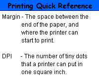
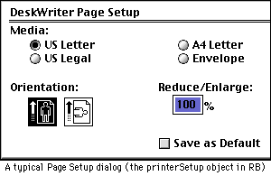

Printing with REALbasic
by Alexander Duncan
Printing. It seems simple enough. Just type some text onto the screen,
and print it. Standard BASIC code uses this very word: PRINT "Hello World!"
is everybody’s first BASIC program. A slight variation would be LPRINT "Hello
World!", which would be used to actually print “Hello World”. The program
sends a series of characters to the printer, and the printer prints each character
sequentially, automatically assigning any overflow from the previous line or page
to each subsequent page or line. Right?
Wrong! In this era of laser printers and graphical user interfaces, with multiple fonts and font sizes and multiple paper sizes, printing has become an increasingly sophisticated and complex undertaking in any programming language, and REALbasic hasn’t made it easy yet either. Although REALbasic does allow the use of a widthWrap method, which automatically calculates where to break each line of text (without which the text would simply disappear off the right-hand margin of the page), the use of widthWrap when the printing is longer than a single page means it is impossible to determine the location in the character data string where the page will break. Character data strings are measured in characters, but pages are measured in pixels. What appears on the screen as pixels is printed as dots per inch. Thus, how does one “map” the “virtual page” of screen text onto the physical printed page? REALbasic formats the virtual page as a screen object, which it prints by sending it to the printer as a complete graphics object–not a series of characters at all. If this “picture” is larger than the paper size, and widthWrap is turned on, the printer will print the upper left-hand portion of the picture with the dimensions of the paper size, ignoring the rest of the picture and thus failing to print more than the first page of a multiple page text document. If widthWrap is turned off, the text will simply disappear off the right-hand margin of the page. Teaching REALbasic to print multiple pages of text is difficult, but not impossible. In this article you’ll learn how.
The major problem in REALbasic printing is determining the position in the character data string where the page break occurs. In order to solve this problem we will use our own widthWrap-like method, thus giving the program complete control over the place where each line breaks. Knowing where each line breaks allows us to count the total number of lines. Since we can calculate the total number of lines in the given font and font size which can be printed using the given paper size, as a function of the height of the page divided by the height of the font in pixels, and we can calculate the width of a given string in pixels, and compare it with the width of the page, it becomes possible to relate the character data string to the physical page in such a way that we can find the point in the character data string at which each line and page should break. This procedure can then be repeated indefinitely until all possible pages are printed.
The program performs its magic using the following 12 REALbasic command words principally (in order of appearance):
printerSetup class
graphics class
textFont property of the graphics class
textSize property of the graphics class
len function
mid function
stringWidth method of the graphics class
width property of the printerSetup class
height property of the printerSetup class
textHeight property of the graphics class
drawString method of the graphics class
nextPage method of the graphics class
The code is divided up into 7 discrete blocks, each of which works much like a subroutine or method:
Method 1: all properties are declared
Method 2: all properties are initialized
Method 3: each line of text is parsed
Method 4: each line of text is saved in an array
Method 5: all properties are reset for the next line
Method 6: after either a complete page has been saved in method 4, or all the text
has been saved, the page array is printed and cleared
Method 7: all properties are reset for the next page, or the program ends
Logical flow between these methods is controlled using do loops, if loops, and a single Boolean property. The program also makes important use of the redim method. (The author assumes herein that the reader thoroughly understands the use and principles of programming of string arrays as well as general good programming principles.)
The program defines 11 properties: printerSetup, which represents the printer setup object; graphics creates a graphic object corresponding to the virtual page; checkPointer, which points at each subsequent character in the character data string; startLine, which indicates the checkPointer position corresponding to the beginning of each subsequent line; previousSpace, which points at the space before the right hand margin in each line; page, a string array which acts as a “container” to hold the contents of each line of the page; lineNumber, which indicates the line being parsed and saved; lineOverflow, which contains the string segment in each line which is cut off by the right hand margin, from previousSpace to checkPointer; pageNumber, which indicates the page being printed; and eof, a Boolean property which changes from false to true when checkPointer reaches the end of the character data string. The following code summarizes methods 1 and 2, above (the complete code example is repeated at the end of the article):
[Use a RETURN character to format paragraphs and blank lines. Also make sure you
add a RETURN to the end of the character data string for the following example to
run properly.]
Sub Action()//put this code in a pushbutton
dim ps as printerSetup
dim g as graphics
dim checkPointer as integer
dim startLine as integer
dim previousSpace as integer
dim page(0) as string
dim lineNumber as integer
dim lineOverflow as string
dim n as integer
dim pageNumber as integer
dim eof as boolean
ps = new printerSetup //create printer setup object
g = openPrinterDialog(ps) //assign printer setup
//object’s values to a graphics object
if g <> nil then //avoids a NilObjectException error
checkPointer = 1
startLine = 1
previousSpace = 0
lineNumber = 1
lineOverflow = ""
n = 0//use in if loops
pageNumber = 1
eof = false
//the following two lines could easily be adapted
//to read their values from an editfield control
//or a menubar item thus giving the user control
//over which font is used to print the text and size
g.textFont = "Courier" //substitute any font you have
g.textSize = 14//substitute any reasonable size
Method 3 parses each subsequent line. The point of parsing the character
data string is to locate the spaces immediately before and after the right-hand margin
of the page, or determine if the line is shorter than the width of the page. If the
line is wider than the page, then the right-hand margin wraps around the previous
space, and the string segment from previousSpace to the space after the margin, indicated
by the checkPointer property, is concatenated to the beginning of the next line.
If the line is the same width as the page, then the line wraps on checkPointer. If
the line is narrower than the page, shown by the RETURN character, the parse line
method is exited. If the end of the text has been reached, shown by the length of
the character data string being equal to the value of checkPointer, then the eof
Boolean property is flagged; this indicates the last iteration.
do
do
if checkPointer = len(editField1.text) then
eof = true
end if
do
//ASC returns the ASCII value of the corresponding character
if asc(mid(editField1.text, checkPointer, 1)) = 32 or asc(mid(editField1.text, checkPointer,
1)) = 13 then
previousSpace = checkPointer
end if
if eof = false then
checkPointer = checkPointer + 1
end if
loop until (asc(mid(editField1.text, checkPointer, 1)) = 32 and g.stringWidth(mid(editField1.text,
startLine, checkPointer - startLine)) >= ps.width) or asc(mid(editField1.text,
checkPointer, 1)) = 13
Once the line is parsed it is saved to a string array representing the
page, in which each element or cell corresponds to a line of the page. If the line
being saved is wider than the page, the difference is stored in the lineOverflow
property and concatenated to the next cell.
if g.stringWidth(mid(editField1.text, startLine, checkPointer - startLine)) >
ps.width then
if lineOverflow <> "" then
page.append lineOverflow + mid(editField1.text, startLine, previousSpace - startLine)
lineOverflow = mid(editField1.text, previousSpace + 1, checkPointer - previousSpace
+ 1)
else
page.append mid(editField1.text, startLine, previousSpace - startLine)
end if
else
if lineOverflow <> "" then
page.append lineOverflow + mid(editField1.text, startLine, checkPointer - startLine)
lineOverflow = ""
else
page.append mid(editField1.text, startLine, checkPointer - startLine)
end if
end if
The startLine property, which points to the beginning of the next line, is reset
to the previous or subsequent space, depending on whether the line is wider than
the page, and the line number incremented by 1.
if g.stringWidth(mid(editField1.text, startLine, checkPointer - startLine)) >
ps.width then
startLine = previousSpace + 1
else
startLine = checkPointer + 1
end if
lineNumber = lineNumber + 1
The previous code repeats until the last line of the page or the end of the character
data string has been reached. After saving the last line, the code exits and proceeds
to print. It prints out each cell of the array, line by line, then clears the array.
loop until lineNumber > floor(ps.height / g.textHeight) or eof = true
for n = 1 to ubound(page)
//this use of uBound avoids OutofBoundsException errors
//and is good programming practice generally
g.drawString page(n), 0, g.textHeight * n
next
redim page(0)
If the end of the character data string has not yet been reached, then the page
and line numbers are incremented by 1. The nextPage command forces the printer
to start printing on a new page. The whole process just described repeats, until
the end of the string is reached and the last page printed.
if eof = false then
pageNumber = pageNumber + 1
lineNumber = 1
g.nextPage
end if
loop until eof = true
end if
Production of a fully functional and complete printing class would require additional
attention to such issues as adjustable vertical and horizontal margins; the capacity
to change fonts and font sizes; indentation and tabs; styled text; right, centre,
and full justification; and forced page breaks. However, the code example presented
here is the core of printing with REALbasic. It accurately determines line length,
line breaks, and page breaks for any reasonable font and font size and any number
of pages. Perhaps further articles will address some additional details of
Printing with REALbasic
copyright © 1999 by Alexander Duncan (all rights reserved)
dim ps as printerSetup
dim g as graphics
dim checkPointer as integer
dim startLine as integer
dim previousSpace as integer
dim page(0) as string
dim lineNumber as integer
dim lineOverflow as string
dim n as integer
dim pageNumber as integer
dim eof as boolean
ps = new printerSetup
g = openPrinterDialog(ps)
if g <> nil then
checkPointer = 1
startLine = 1
previousSpace = 0
lineNumber = 1
lineOverflow = ""
n = 0
pageNumber = 1
eof = false
g.textFont = "Courier"
g.textSize = 14
do
do
if checkPointer = len(editField1.text) then
eof = true
end if
do
if asc(mid(editField1.text, checkPointer, 1)) = 32 or
asc(mid(editField1.text, checkPointer, 1)) = 13 then
previousSpace = checkPointer
end if
if eof = false then
checkPointer = checkPointer + 1
end if
loop until (asc(mid(editField1.text, checkPointer, 1)) = 32 and
g.stringWidth(mid(editField1.text, startLine, checkPointer - startLine))
>= ps.width) or asc(mid(editField1.text, checkPointer, 1)) = 13
if g.stringWidth(mid(editField1.text, startLine, checkPointer -
startLine)) > ps.width then
if lineOverflow <> "" then
page.append lineOverflow + mid(editField1.text, startLine, previousSpace
- startLine)
lineOverflow = mid(editField1.text, previousSpace + 1, checkPointer -
previousSpace + 1)
else
page.append mid(editField1.text, startLine, previousSpace - startLine)
end if
else
if lineOverflow <> "" then
page.append lineOverflow + mid(editField1.text, startLine, (checkPointer
- startLine))
lineOverflow = ""
else
page.append mid(editField1.text, startLine, (checkPointer - startLine))
end if
end if
if g.stringWidth(mid(editField1.text, startLine, checkPointer -
startLine)) > ps.width then
startLine = previousSpace + 1
else
startLine = checkPointer + 1
end if
lineNumber = lineNumber + 1
loop until lineNumber > floor(ps.height / g.textHeight) or eof = true
for n = 1 to ubound(page)
g.drawString page(n), 0, g.textHeight * n
next
redim page(0)
if eof = false then
pageNumber = pageNumber + 1
lineNumber = 1
g.nextPage
end if
loop until eof = true
end if